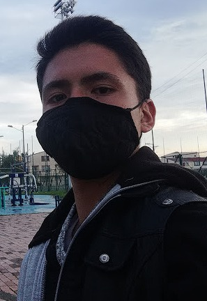

Datos Personales
Correo personal: kbrg.802@gmail.com
Correo carrera: rkendal@ucompensar.edu.co
Teléfono: +57 3027899717
Perfil
Hoja de Vida
Formación Académica
Bachiller del colegio Francisco de Paula Santander, Bogotá, Barrio Santander
Actualmente estudiando en la Fundación Universidad de Compensar en Ingeniería en Software
Certificaciones:
Kendal BarucRozo Galindo-Cybersecurity Es-certificate
Kendal Baruc Rozo Galindo-Software y TI.pdf
Experiencia Laboral
1.5 años de experiencia en atención al cliente en un restaurante de comida china como mesero y coordinador de salón
Habilidades: Responsable, amable, buen diálogo, buena adaptabilidad, diciplinado y resiliente
Sobre Mi
"Soy un estudiante comprometido y autónomo con una sólida experiencia en relaciones sociales, y habilidades destacadas en tecnologías de hardware, software de computadoras y redes me gusta mucho el deporte